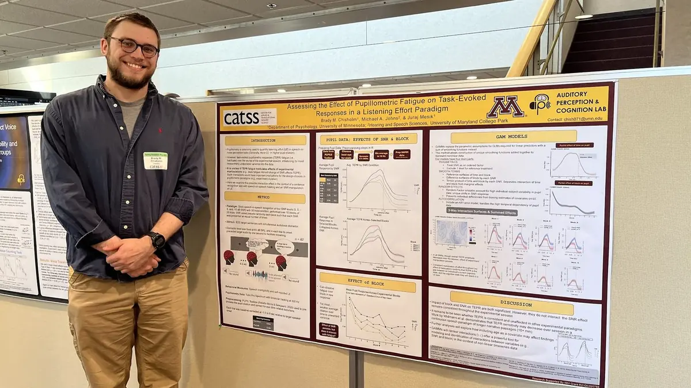
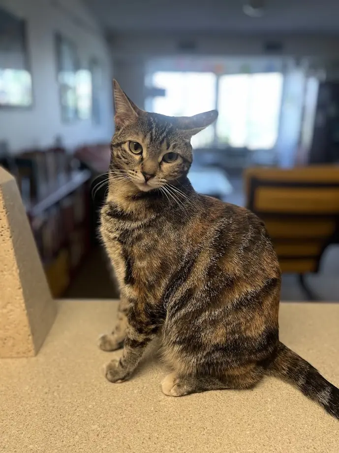
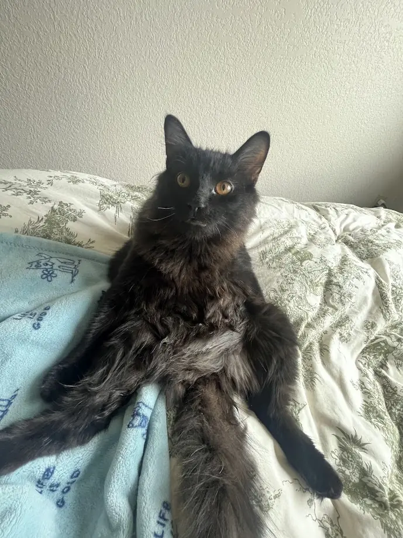

How does the brain make sense of speech, and what happens along the auditory system when hearing breaks down?
Research Professional in the Sensory Optimization & Neural Implant Coding Lab and administering free sensory screening with the Center for Applied & Translational Sensory Science (opens in new tab).
I run psychophysics and EEG experiments with cochlear implant users and older adults.
I am applying to PhD programs in hearing science and auditory neuroscience for Fall 2027.

Recent Experience
-
Research Professional
Sensory Optimization & Neural Implant Coding Lab · PI: Hubert Lim
Validating a psychophysical testing suite for an auditory nerve implant; running a pitch-scaling study in normal-hearing and cochlear-implant listeners to accelerate implant fitting.
Aug 2026 – present
-
Research Professional
Center for Applied & Translational Sensory Science · Director: Andrew Oxenham
Run hearing and vision screenings aboard the See, Hear, MN mobile unit, and drive the unit to sites across metro and rural Minnesota. Support collaborators research efforts at events.
Aug 2026 – present
-
Psychology Consultant
Institute for Health Informatics · Dr. Piper Ranallo
Conducted structured review of 300+ behavioral health assessment instruments and their validation literature.
May – Jul 2026
-
Research Assistant, then Research Professional
Auditory Perception & Cognition Lab · PI: Andrew Oxenham
Speech-in-speech perception and listening effort, measured with EEG and pupillometry.
May 2024 – Jul 2026
-
Research Assistant
Animal Communication Lab · PI: Mark Bee
Phonotaxis experiments investigating comodulation masking release in Cope’s gray treefrog.
Summer 2024
Full history, publications, posters, and technical skills are in my CV.
Education
-
B.S., Psychology
University of Minnesota, Twin Cities
August 2025
Office Support Staff
My office work is supervised by Poppy and Lloyd, who are always ready to assist with reading literature or reviewing code.

Poppy

Lloyd